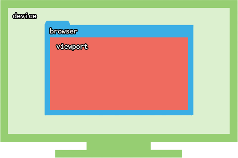

The Web is meant to provide a platform to share information easily across the Internet, no matter which device the information is viewed on. While the only disparaties between computers accessing the Web consisted mostly upon different screen resolutions, the rapid growth of mobile devices has changed the requirements: a website needs to be accessible on mobile in order to be relevant.
What options are available to handle mobile devices?
- Not doing anything and let mobile users zoom in to read your website
- Create a second website, like m.facebook.com, and redirect mobile devices to that website
- Use responsive web design
Device, browser, viewport
Before going further, we need to define some terms:
- device
- the hardware used: smartphone, tablet, pc or laptop
- browser
- the software running: Firefox, Google Chrome, Safari, Internet Explorer
- viewport
- the region within the browser that actually displays the webpage

Responsive web design
The idea behind responsive web design is to make your website adapt to fit to any device. It does so by targetting devices with your CSS and applying certain styles on these devices only.
Responsiveness relies upon the properties of either the device or the viewport. For example:
- how wide is the viewport?
- how high is the viewport?
- how is the viewport oriented?
- what is the device’s resolution?
Depending on the answer to these questions, a responsive CSS will apply different or additional CSS rules.
Up until now, every part of our CSS was used by every device that accessed our webpage. Responsive web design allows us to apply certain styles in certain cases.
media queries
We need to write blocks in our CSS that will only be used by devices that match that block’s criterias. These blocks are called media queries.
The media query syntax is reminiscent of the animation keyframes syntax, as it defines a block within the CSS, in which you write additional CSS rules that are only applied in certain cases.
/* This part is read by every device/viewport */
body{ font-size: 14px;}
@media (min-width: 1200px) {
/* This part is only read by viewports wider than 1200 pixels */
body{ font-size: 16px;}
}Here, the default text size is 14px. But to accomodate for larger viewports, the text size is set to 16px if the viewport is wider than 1200 pixels.
Keep in mind that we’re talking about the viewport, not the device’s.
On mobile, considering browsers are running in fullscreen, the two widths are interchangeable. If you’re on desktop, resize your browser window to see media queries being activated/desactivated.
Several parameters
You can require 2 conditions for a media query to be activated.
body{ font-size: 18px;}
@media (min-width: 1000px) and (orientation: landscape) {
body{ font-size: 20px;}
}The font size will only be set to 20px if the viewport is at least 1000px wide and in landscape mode (as opposed to portrait mode).
You can also use not and only. These are called logical operators.
Several CSS rules
You can include as many CSS rules as you want in the media query.
body{ font-size: 14px;}
.button{ display: block;}
.title{ text-align: center;}
@media (min-width: 1200px) {
body{ font-size: 16px;}
.container{ margin: 0 auto; width: 960px;}
.button{ display: inline-block;}
.title{ text-align: left;}
}Parameters
Media queries require parameters which act like conditions that need to be filled in order for the media query to be activated.
By writing @media (min-width: 1200px), we tell the browser to read this block only if the viewport is wider than 1200px.
width
The width parameter is the most used one in responsive web design. This comes from the fact that webpages are read vertically: we scroll to read the hidden content. As a result, the width is fixed and constrained, while the height of the website is variable.
Because we don’t (usually) scroll horizontally, we need to fit our design within the available viewport width. Media queries allow to perform checks on this width, and apply certain styles if the viewport is wider than (min-width) or narrower than (max-width) a specific amount of pixels.
You can use either:
min-width(960px): styles will be applied only if the viewport is wider than 960pxmax-width(768px): styles will be applied only if the viewport is narrower than 768px
These parameters accept pixels, ems and rems.
Every time you resize your viewport, the browser checks the CSS for media queries that include width parameters, and applies its styles accordingly.
height
The height parameter works like the width one, expect it performs its checks on the viewport’s height.
You can use min-height and max-height.
It’s rarely used, as websites are mainly scrollable vertically, and rarely need to adapt their design for shorter viewports.
orientation
The orientation parameter can detect if the viewport is in either of the following modes:
- landscape: the viewport is wider than it is tall
- portrait: the viewport is taller than it is wide
@media (orientation: portrait) {
/* For vertical viewports */
}
@media (orientation: landscape) {
/* For horizontal viewports */
}Although it’s mostly used for tablets and smartphones, be aware that even on a widescreen monitor, the viewport can be in portrait if its width is smaller than its height.
On mobile, even if you’re holding your device in portrait mode, if the keyboard shows up, the viewport can be considered as landscape, considering how its height becomes smaller than its width.
resolution
The resolution parameter is relevant to the device’s pixel density, and can be expressed in either dots per inch dpi or dots per centimeter dpcm.
It depends on:
- what your resolution is (like 1440x900, 1280x800, 1024x768 etc.)
- what your screen’s diagonal is (like 11,6’’, 14’’, 21’’ etc.)
The pixel density basically tells how crisp your display is (the higher the dpi, the crisper the display).
@media (min-resolution: 300dpi) {
/* */
}Desktop screens usually have a pixel density around 100 dpi. Smartphones on the other hand have an incredible range of dpi. For example:
- Nokia Lumia 640: 332dpi
- Apple iPhone 6+: 401dpi
- Google Nexus 5: 445dpi
- HTC One: 469dpi
- Samsung Galaxy S6: 577dpi
What role does CSS play here? Well, higher resolution screens will render text very clearly: individual pixels become hardly noticable, and letters look absolutely smooth.
The problem is with images on Retina displays for example. It’s a long topic, so read this “CSS Techniques for Retina Displays” article on sitepoint.

Source: sitepoint.com
A use case would be to provide a default background image for every device, and apply high resolution background images on Retina displays.
/* 40x40 logo */
.logo{ background-image: url(marksheet-logo.png); background-size: 40px 40px;}
@media (min-resolution: 300dpi) {
/* 80x80 logo resized to 40x40 */
.logo{ background-image: url(marksheet-logo@2x.png);}
}Keep in mind that the background size must be set. Otherwise, the @2x Retina image would take twice the space.
The @2x suffix is just Apple’s notation for Retina images, and has been adopted as the de facto default notation in CSS.
Mobile-first or desktop-first
Usually, you want to focus on the full width desktop version first, as it features a more complex design that includes columns, hover states, absolute positioning, floats etc.
But designing the mobile version first is actually easier considering a “HTML is almost 100% responsive out of the box”. Most web designs on mobile are only focusing on vertical layouts, with no or very few columns, because scrolling is natural on mobile devices.
Using the Flow is straightforward to design a mobile site: just order your HTML elements in the way you want them to be displayed. Simply by writing your HTML code, you’re already designing your mobile website. Header first, menu afterwards, then your content, and a footer at the end. Voilà!
A mobile-first CSS would use min-width media queries in order to apply specific rules for larger viewports:
/* General CSS rules for every viewport, including smartphones */
body{ }
.title{ }
.button{ }
@media (min-width: 768px) {
/* Rules for tablets and bigger viewports */
}
@media (min-width: 992px) {
/* Rules for laptops, small desktop screens and bigger viewports */
}
@media (min-width: 1200px) {
/* Rules for larger desktop screens only */
}A desktop-first approach starts with styles for large screens and min-width media queries in order to apply specific rules for larger viewports:
/* General CSS rules for every viewport, including large desktop screens */
body{ }
.title{ }
.button{ }
@media (max-width: 1199px) {
/* Rules for laptops, small desktop screens, and smaller viewports */
}
@media (max-width: 991px) {
/* Rules for tablets and smaller viewports */
}
@media (max-width: 767px) {
/* Rules for smartphones only */
}Notice how the desktop-first max-width values are 1 fewer than the mobile-first min-width. For example:
@media (min-width: 768px)targets tablets@media (max-width: 767px)doesn’t target tablets